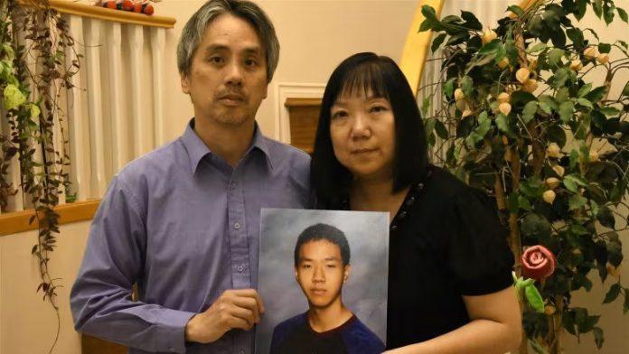

华裔少年黄矅辉（Alfred Wong）六年前中流弹身亡一案审讯接近尾声，一名女证人周三（7日）出庭作供，披露案中更多细节。
由于法庭颁发了禁令，该名女证人的身份不能公开，据称她是凶手真正目标的男子当时的女友。
她在庭上说，在2018年1月13日晚上，她和男友里瓦斯（Matthew Navas-Rivas）在一片枪林弹雨中乘坐的士逃避了枪击。
警方于2019年表示，相信是帮派人物的怀特赛德（Kevin Whiteside），于案发当晚前往一家餐厅意图枪杀里瓦斯，这举动引来一名男子还火，控方相信这人是卡达（Kane Carter）。
怀特赛德中枪死亡。里瓦斯未有受伤，但数月后于温东另一宗枪击案中被杀。卡达在2022年3月于安省被捕。
案发时，15岁的黄矅辉（Alfred Wong）跟家人在温市共享晚餐后，与父母同车返回高贵林。在经过百老汇东街（East Broadway）夹安大略街（Ontario St.）时，坐在后座的黄矅辉被来自街上的流弹击中，送院急救两天后伤重死亡。
据Global News报道，女证人供称她和里瓦斯乘的士离开时，怀特塞德沿百老汇东街徒步追着的士并疯狂地开枪。
控方指卡特开枪射杀了怀特塞德。然而女证人在庭上称，她不记得有否听到枪声，也没有看到是谁扳动了机掣，更不知道枪手的身份。
周三的庭审揭露，该名女证人在不到三个月前才向警方提供证供，距离案发日期已过去了六年多。
她指称六年来警方一直纠缠着她，又没收了她的手机，并试图为取得开机密码给她支付酬金。她最终于2021年4月签署了一份合约，从中可取得 15,000元。
控方预计本案将于本月稍后时间审结，较原定计划早了大约三个月。
V20